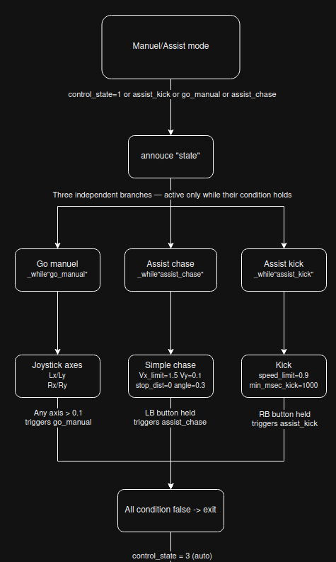
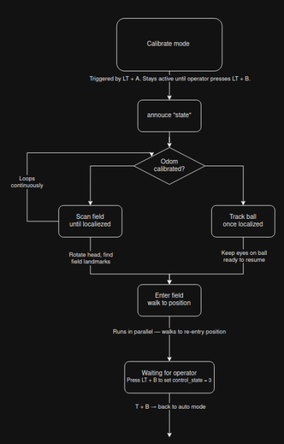
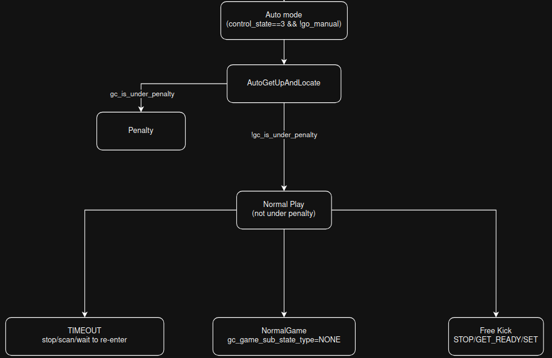
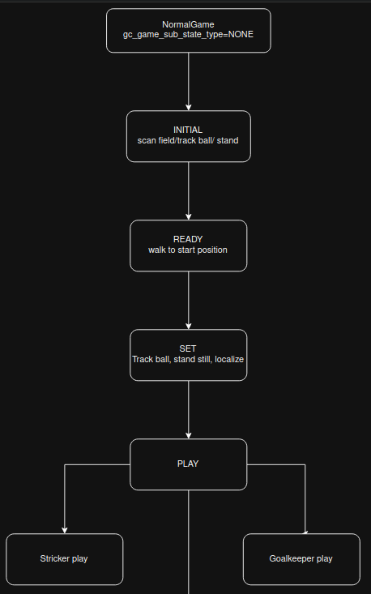
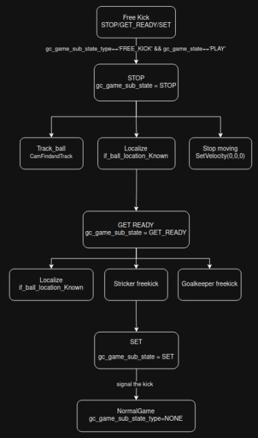
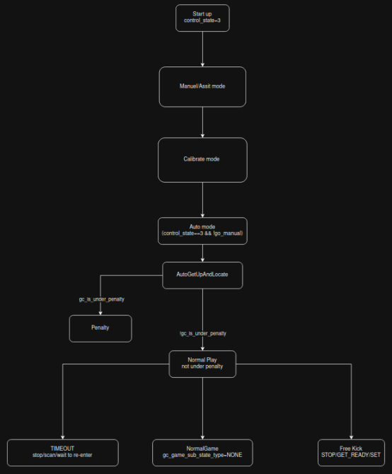
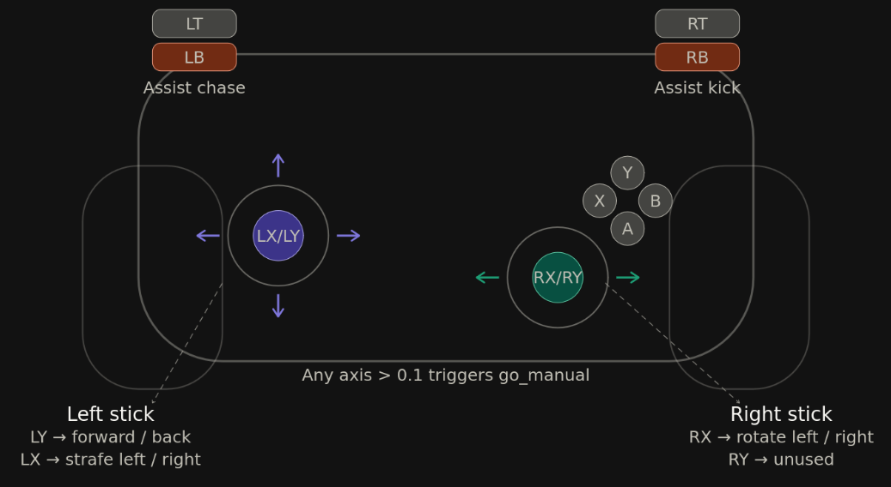

Behavior Tree Reference#
Overview#
The tree is a single root Sequence. On startup a RunOnce sets
control_state=3 (auto mode). Three priority blocks are checked
top-to-bottom every tick via ReactiveSequence _while. The first
block whose condition is true wins; all lower-priority blocks are
skipped.
Control States — Priority Order#
State 1 — Manual / Assist Mode (highest priority)#
Active when: control_state==1 or assist_kick or go_manual or assist_chase
Go manual |
Any joystick axis >0.1 → direct velocity control. LX/LY = move, RX = rotate. |
Assist chase |
Hold LB → |
Assist kick |
Hold RB → |
Enter |
LT+X sets |
Exit |
Release all conditions, or press LT+B |

Three independent branches: go manual, assist chase, assist kick.
State 2 — Recalibrate / Re-enter Mode#
Active when: control_state==2
If !calibrated |
|
If calibrated |
|
Parallel |
|
Enter |
LT+A sets |
Exit |
Operator presses LT+B (no automatic exit) |

Localization loop: scan field until calibrated, then track ball.
State 3 — Full Auto Mode (default)#
Active when: control_state==3 && !go_manual — set on startup
Step 1 |
|
Step 2 |
If |
Step 3 |
Otherwise → game flow by sub-state type (see below). |
Enter |
Startup ( |
Exit |
Never — this is the default state |

Three-phase mode auto flow: AutoGetUpAndLocate → WaitForPenalty → GameFlow.
Auto Mode — Sub-state Types#
TIMEOUT#
Stop all movement, scan field, track ball. Safe idle until game resumes.
NONE — Normal Play#
Driven by gc_game_state from the game controller:
Game state |
Behavior |
|---|---|
INITIAL |
Scan field to localize, track ball, walk to entry position. Loops until READY signal. |
READY |
Look forward ( |
SET |
Track ball with camera, stop all movement, localize. Freeze and wait for kickoff. |
PLAY |
Run |
END |
Stop all movement. Match over. |

Four-phase normal game flow: INITIAL → READY → SET → PLAY.
FREE_KICK — During PLAY#
Active when gc_game_sub_state_type == 'FREE_KICK' and gc_game_state == 'PLAY'.
Driven by gc_game_sub_state:
Phase |
Behavior |
|---|---|
STOP |
Track ball, localize if |
GET_READY |
Localize, then run role-specific freekick subtree ( |
SET |
Track ball, localize, stop all movement. Wait for kick signal. |

Three-phase free kick flow: STOP → GET_READY → SET.
Startup Sequence#
RunOncesetscontrol_state = 3.State 1 and State 2 checks are skipped — conditions false.
State 3 activates →
AutoGetUpAndLocateruns.Not penalized → sub-state NONE →
gc_game_state = INITIAL.CamScanFielduntil localized →CamFindAndTrackBall→SelfLocateEnterField.Loops in INITIAL until game controller sends READY signal.

Top-level control flow: startup, modes, and sub-state routing.
Example Robot Status#
Field |
Value |
|---|---|
Team ID / Player ID |
29 / Player 1 |
Number of players |
3 |
Role |
Striker (start role: striker) |
Control state |
Auto (3) |
Game sub-state type |
NONE |
Game state |
INITIAL |
Kickoff side |
NO |
Score |
0 : 0 |
Live count / Oppo |
0 / 0 |
Primary striker |
YES |
Key Design Patterns#
ReactiveSequence with _while#
The sequence only runs while its condition is true. The moment the condition becomes false, the sequence exits immediately and the tree falls through to the next sibling. This gives the tree its priority-based, reactive feel — higher-priority states preempt lower ones instantly.
_autoremap="true"#
All subtrees share the same blackboard automatically. Any key with the
same name in both the parent and subtree is connected without explicit
port mapping. Since brain.cpp writes entries like
tree->setEntry<string>("player_role", ...), every subtree that
declares a port with that name gets the value automatically.
Role separation#
The player_role blackboard key gates which subtree runs at PLAY and
GET_READY levels. The value is written by handleCooperation() in
brain.cpp based on team negotiation and game state.
Actual soccer logic#
The interesting behavior — chasing, kicking, positioning, defending — lives entirely inside four subtrees:
StrikerPlayGoalKeeperPlayStrikerFreekickGoalKeeperFreekick
Behavior Tree Diagrams#
The following diagrams illustrate each state machine from the behavior tree, as designed in draw.io.
Diagram 1 — Full Auto Mode Overview#
Top-level control flow: startup, modes, and sub-state routing.
Diagram 2 — Manual / Assist Mode#
Three independent branches: go manual, assist chase, assist kick.
Diagram 3 — Recalibrate / Re-enter Mode#
Localization loop: scan field until calibrated, then track ball.
Diagram 4 — Free Kick State Machine#
Three-phase free kick flow: STOP → GET_READY → SET.
Diagram 5 — Normal Game State Machine#
Four-phase normal game flow: INITIAL → READY → SET → PLAY.
Diagram 5 — Mode Auto State Machine#
Three-phase mode auto flow: AutoGetUpAndLocate → WaitForPenalty → GameFlow.
Diagram 6 — Controller#

All inputs